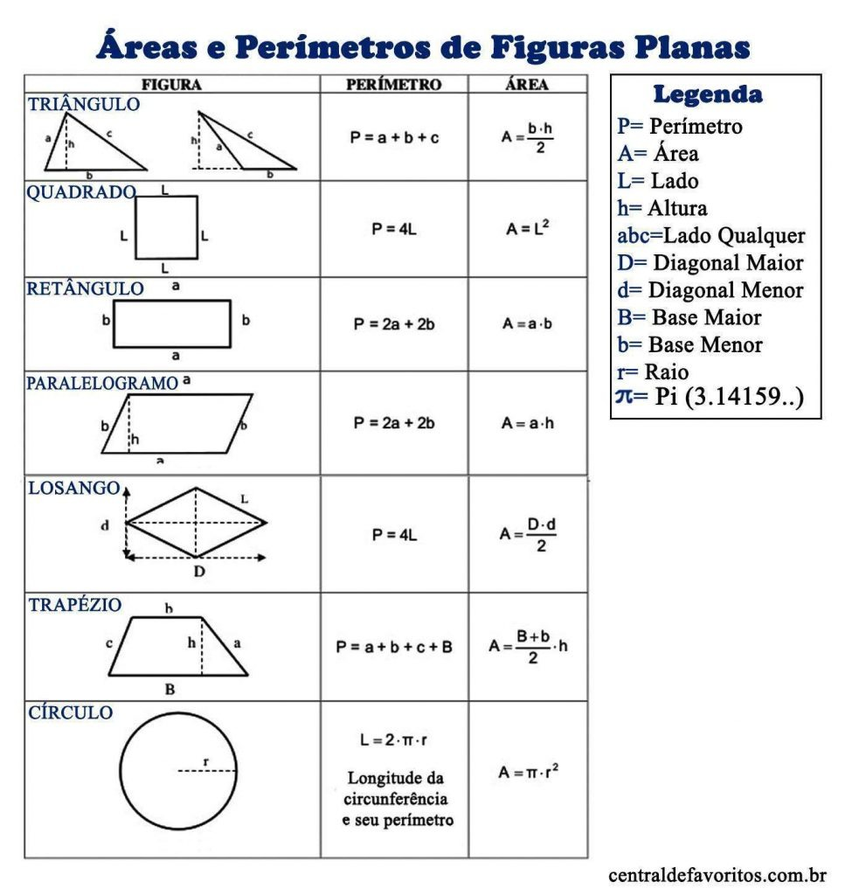
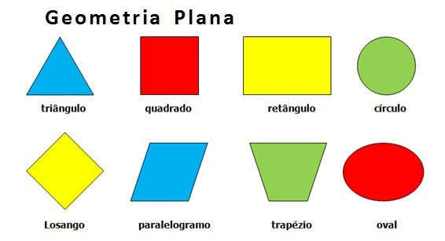
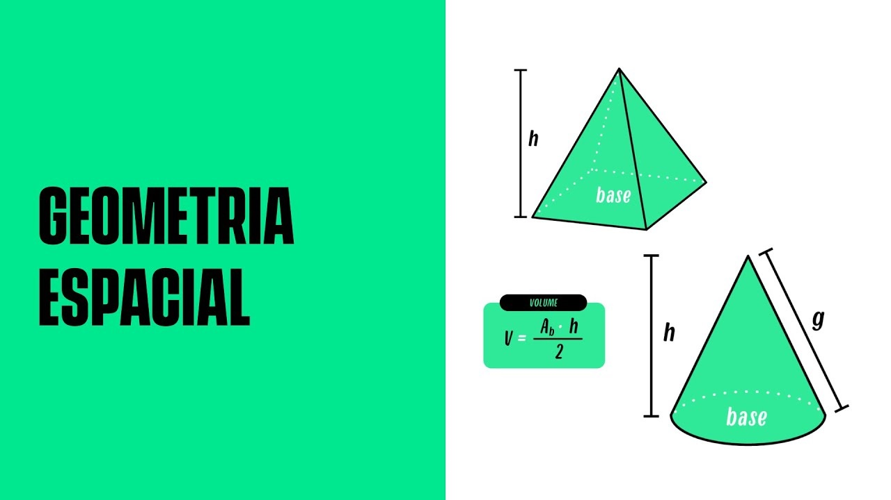
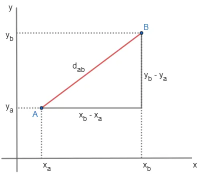

A Beleza das Formas: Explorando a Geometria e suas Propriedades
A Geometria é uma das três grandes áreas da Matemática, juntamente com o cálculo e a álgebra. Ela se dedica ao estudo das formas dos objetos presentes na natureza, assim como às posições ocupadas por esses objetos, às relações entre eles e às propriedades relacionadas a essas formas. A Geometria também se preocupa com as propriedades das figuras geométricas. Essas propriedades são essencialmente resultados das análises das relações entre os objetos e as figuras geométricas. Por exemplo, uma propriedade das circunferências é a seguinte: o resultado da divisão entre o comprimento de uma circunferência e o seu diâmetro será sempre igual a π (aproximadamente 3,14).
Quais são os 3 tipos de geometria?
-
A Geometria área de estudo da Matemática, é dividida em: Geometria Plana, Espacial e
Analítica.
Geometria Plana
A geometria plana é uma área da
matemática que estuda as figuras geométricas que estão contidas em um único plano.
Ela lida com pontos, retas, segmentos de reta, ângulos, polígonos e outras formas
que podem ser desenhadas em uma superfície plana.
Nesse ramo da geometria, estudamos as propriedades e relações entre essas figuras
geométricas. Por exemplo, um ponto é uma posição no espaço sem dimensões. Uma reta é
uma sequência infinita de pontos em uma única direção. Um segmento de reta é uma
parte de uma reta limitada por dois pontos. Um ângulo é a abertura formada por duas
retas que se encontram em um ponto comum, chamado de vértice do ângulo.
Os polígonos são figuras planas fechadas formadas por segmentos de reta que se
intersectam apenas em seus pontos extremos. Alguns exemplos de polígonos comuns são
triângulos, quadrados, retângulos e pentágonos. Cada polígono tem suas próprias
características, como número de lados, medidas de ângulos internos e externos, além
de possíveis simetrias.
A geometria plana também estuda as transformações geométricas, como reflexão,
rotação, translação e dilatação. Essas transformações permitem mover, girar,
espelhar ou redimensionar as figuras geométricas sem alterar suas propriedades
fundamentais.
A geometria plana é aplicada em diversas áreas, como arquitetura, design, engenharia
e até mesmo na vida cotidiana. Ela nos ajuda a compreender as relações espaciais, a
resolver problemas relacionados à forma e ao espaço, e a criar estruturas e objetos
com precisão.
Espero que esta explicação tenha sido útil! Se você tiver mais alguma pergunta sobre
geometria plana, fique à vontade para perguntar.

Geometria Espacial
A geometria espacial é uma área da
matemática que estuda as propriedades e as relações dos objetos tridimensionais, ou
seja, aqueles que possuem comprimento, largura e altura. Nessa área, são analisados
diversos sólidos geométricos, como cubos, prismas, pirâmides, esferas, cilindros e
cones.
Uma das principais características da geometria espacial é a determinação do volume
e da
área desses sólidos. O volume representa a quantidade de espaço ocupado pelo objeto,
enquanto a área corresponde à medida de sua superfície.
Além disso, a geometria espacial também envolve o estudo de outros elementos, como
arestas, vértices e faces dos sólidos. As arestas são as linhas que delimitam os
sólidos, os vértices são os pontos onde as arestas se encontram e as faces são as
superfícies planas dos sólidos.
Através de fórmulas e propriedades específicas, é possível calcular e determinar
diversas informações sobre os sólidos geométricos, como o perímetro da base, a
altura, a
diagonal, o raio, a altura, entre outros dados.
A geometria espacial possui diversas aplicações práticas, sendo utilizada em áreas
como
arquitetura, engenharia, design, física e computação gráfica. É uma área fundamental
para compreender e analisar objetos tridimensionais presentes no nosso cotidiano.


Geometria Analítica
A geometria analítica é um ramo da
matemática que combina a geometria com a álgebra.
Nessa área, os conceitos geométricos são expressos em termos de coordenadas e
equações,
permitindo uma abordagem mais precisa e formal para estudar as figuras geométricas.
A geometria analítica utiliza um sistema de coordenadas para representar pontos,
retas,
curvas e outras figuras geométricas no plano cartesiano ou no espaço tridimensional.
As coordenadas dos pontos são representadas por pares ordenados (x, y) no plano ou
trios
ordenados (x, y, z) no espaço. Isso permite a descrição matemática precisa das
posições
dos objetos geométricos.
Por meio da álgebra, é possível realizar operações como cálculos de distâncias,
determinação de equações de retas e circunferências, análise de interseções entre
figuras e resolução de problemas geométricos usando técnicas algébricas.
A geometria analítica desempenha um papel fundamental em diversas áreas, como
física,
engenharia, arquitetura e ciência da computação. Ela fornece ferramentas poderosas
para
modelagem e análise de problemas geométricos, permitindo o desenvolvimento de
soluções
precisas e eficientes.
Em resumo, a geometria analítica é o estudo das figuras geométricas por meio de
métodos
e técnicas algébricas, utilizando coordenadas e equações para descrever e analisar
geometricamente objetos no plano ou no espaço.
A Geometria área de estudo da Matemática, é dividida em: Geometria Plana, Espacial e Analítica.
Geometria Plana
A geometria plana é uma área da matemática que estuda as figuras geométricas que estão contidas em um único plano. Ela lida com pontos, retas, segmentos de reta, ângulos, polígonos e outras formas que podem ser desenhadas em uma superfície plana. Nesse ramo da geometria, estudamos as propriedades e relações entre essas figuras geométricas. Por exemplo, um ponto é uma posição no espaço sem dimensões. Uma reta é uma sequência infinita de pontos em uma única direção. Um segmento de reta é uma parte de uma reta limitada por dois pontos. Um ângulo é a abertura formada por duas retas que se encontram em um ponto comum, chamado de vértice do ângulo. Os polígonos são figuras planas fechadas formadas por segmentos de reta que se intersectam apenas em seus pontos extremos. Alguns exemplos de polígonos comuns são triângulos, quadrados, retângulos e pentágonos. Cada polígono tem suas próprias características, como número de lados, medidas de ângulos internos e externos, além de possíveis simetrias. A geometria plana também estuda as transformações geométricas, como reflexão, rotação, translação e dilatação. Essas transformações permitem mover, girar, espelhar ou redimensionar as figuras geométricas sem alterar suas propriedades fundamentais. A geometria plana é aplicada em diversas áreas, como arquitetura, design, engenharia e até mesmo na vida cotidiana. Ela nos ajuda a compreender as relações espaciais, a resolver problemas relacionados à forma e ao espaço, e a criar estruturas e objetos com precisão. Espero que esta explicação tenha sido útil! Se você tiver mais alguma pergunta sobre geometria plana, fique à vontade para perguntar.
Geometria Espacial
A geometria espacial é uma área da matemática que estuda as propriedades e as relações dos objetos tridimensionais, ou seja, aqueles que possuem comprimento, largura e altura. Nessa área, são analisados diversos sólidos geométricos, como cubos, prismas, pirâmides, esferas, cilindros e cones. Uma das principais características da geometria espacial é a determinação do volume e da área desses sólidos. O volume representa a quantidade de espaço ocupado pelo objeto, enquanto a área corresponde à medida de sua superfície. Além disso, a geometria espacial também envolve o estudo de outros elementos, como arestas, vértices e faces dos sólidos. As arestas são as linhas que delimitam os sólidos, os vértices são os pontos onde as arestas se encontram e as faces são as superfícies planas dos sólidos. Através de fórmulas e propriedades específicas, é possível calcular e determinar diversas informações sobre os sólidos geométricos, como o perímetro da base, a altura, a diagonal, o raio, a altura, entre outros dados. A geometria espacial possui diversas aplicações práticas, sendo utilizada em áreas como arquitetura, engenharia, design, física e computação gráfica. É uma área fundamental para compreender e analisar objetos tridimensionais presentes no nosso cotidiano.
Geometria Analítica
A geometria analítica é um ramo da matemática que combina a geometria com a álgebra. Nessa área, os conceitos geométricos são expressos em termos de coordenadas e equações, permitindo uma abordagem mais precisa e formal para estudar as figuras geométricas. A geometria analítica utiliza um sistema de coordenadas para representar pontos, retas, curvas e outras figuras geométricas no plano cartesiano ou no espaço tridimensional. As coordenadas dos pontos são representadas por pares ordenados (x, y) no plano ou trios ordenados (x, y, z) no espaço. Isso permite a descrição matemática precisa das posições dos objetos geométricos. Por meio da álgebra, é possível realizar operações como cálculos de distâncias, determinação de equações de retas e circunferências, análise de interseções entre figuras e resolução de problemas geométricos usando técnicas algébricas. A geometria analítica desempenha um papel fundamental em diversas áreas, como física, engenharia, arquitetura e ciência da computação. Ela fornece ferramentas poderosas para modelagem e análise de problemas geométricos, permitindo o desenvolvimento de soluções precisas e eficientes. Em resumo, a geometria analítica é o estudo das figuras geométricas por meio de métodos e técnicas algébricas, utilizando coordenadas e equações para descrever e analisar geometricamente objetos no plano ou no espaço.